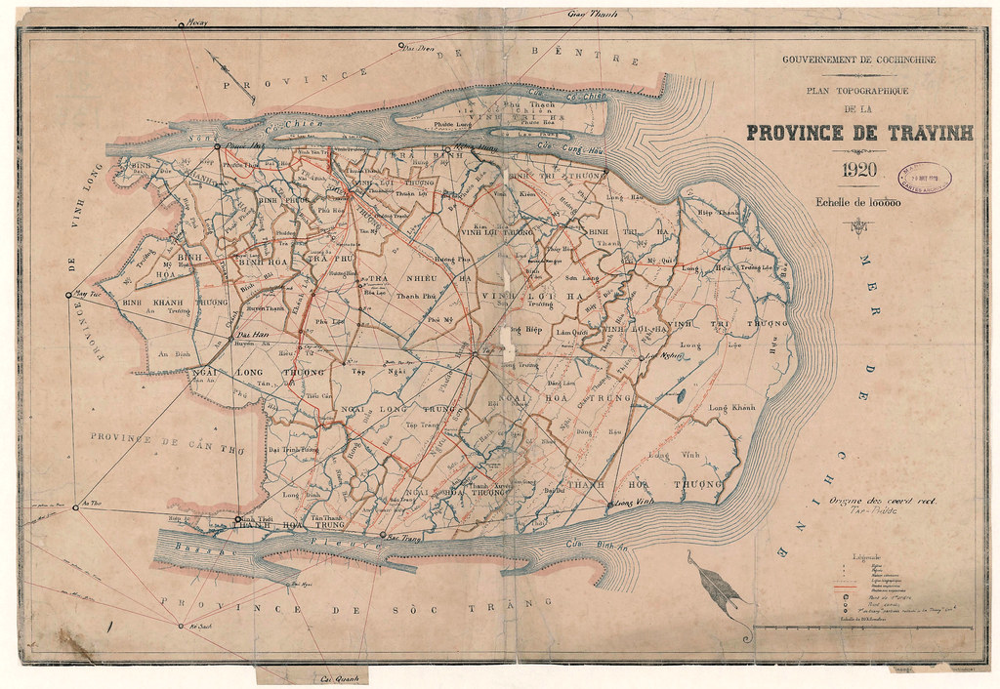
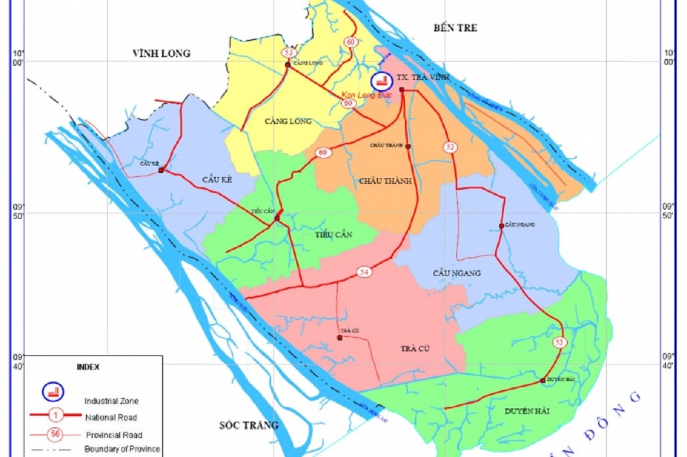

Lịch sử hình thành tỉnh Trà Vinh
Trải qua những thăng trầm vì bị chi phối bởi những quy luật kiến tạo địa chất cùng những lần "biển tiến, biển lùi", vùng đất có tên gọi "Trà Vang" – tiền thân của tỉnh Trà Vinh sau này đã được hình thành từ lâu đời. Vào thời kỳ đó, Trà Vinh vẫn còn là một vùng đất rất hoang vu, các loại cây rừng trùm lên những giồng đất, những đầm lầy và sông rạch chằng chịt, dân cư thưa thớt.
Vào thế kỷ XVII, các quốc gia phong kiến như Việt Nam, Trung Quốc, Campuchia… trong bối cảnh chung của thế giới đã không tránh khỏi sự khủng hoảng và suy yếu. Ở Việt Nam, cuộc chiến tranh Trịnh – Nguyễn (1627-1673) đã chia cắt đất nước thành hai xứ: Đàng trong và Đàng ngoài (lấy sông Gianh làm ranh giới). Điều này đã làm cho hàng vạn nông dân lâm vào thảm họa bị tiêu diệt, phải đi tìm cõi sống ở Phương Nam.
Trước thực tế khách quan đó, vào cuối thế kỷ thứ XVII, các Chúa Nguyễn đã chủ động tổ chức di dân người Việt vào vùng đất Nam bộ, thực thi những chính sách chiêu mộ lưu dân và đưa quân đội vào Nam khai phá đất đai. Cùng với người Việt và người Khmer, người Hoa cũng được Chúa Nguyễn tạo điều kiện để cùng nhau khai phá và định cư trên vùng đất phía Nam này, trong đó có vùng đất Trà Vinh.
Như vậy, vùng đất Trà Vinh, con đẻ của Biển Đông và sông Cửu Long, một vùng đất chứa đựng một hệ sinh thái đa dạng cùng với nhiều tiềm năng kinh tế khác nhau, vào thế kỷ thứ XVII đã có chủ nhân là một cộng đồng dân cư đa dân tộc (Việt, Khmer, Hoa…). Sự hình thành một cộng đồng dân cư đa dân tộc trên vùng đất này là một trong những sự kiện lịch sử có ý nghĩa cực kỳ trọng đại đối với sự hình thành và phát triển của tỉnh Trà Vinh sau này.
